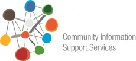
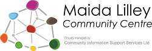
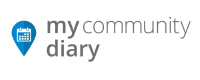

Community Information Support Services
Community Information Support Services is a Not-for-Profit social enterprise established to support the health and well being of Australians. Our vision is to see the generation of better health and social outcomes across Australia by improved access to high quality community information.
Community Information Support Services provides it's services through the following organisations.

